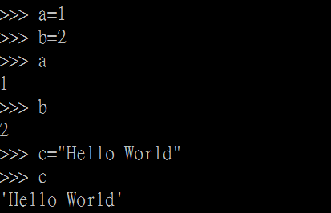
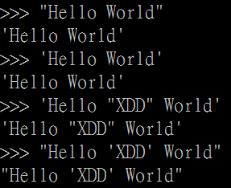
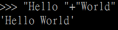
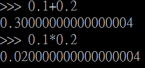

Python 入門
陳哲雋
2016/5/2
Who am I:
陳哲雋(阿哲)
師大資工 105級
第一屆師大資研社社長
萬事平地起
請注意！我們的課程以Python3為主
- Windows/Mac：Miniconda下載安裝
-
Linux：terminal輸入指令"python3"
若無則建議使用預設方式(apt、yum......)安裝
Python
- 直譯式語言
-
使用"縮排"判定範圍
=>不要亂縮排
=>縮排方式要固定
所有程式都是這樣開始的……
"Hello World"
print("Hello World")
縮排
"Hello World"
"Hello World"
"Hello World"
"Hello World"
"Hello World"
"Hello World"
"Hello World"
變數宣告
基礎型別與運算
字串
- 單引號或雙引號包圍住的字元

字串的特殊運算
- 字串相加："str" + "str" 
- 字串乘法："str" * n

如果要一個「"Hello '卍 "XDD" 卍' World"」怎麼辦？
使用跳脫字元來表示
跳脫字元
指特定字元已經被程式語言用來作為語法的一部份或無法用鍵盤打出，需要跳脫(escape)處理之字元
常見跳脫字元
- 換行："\n"
- 定位(tab)："\t"
- 反斜線："\\"
- 單引號："\'"
- 雙引號："\"
試試看
print("Hello \n World")
print("Hello \t World")
print("Hellow \t World")
print("Hello \\World")
print("Hello \World")
print("Hello \' World")
print("Hello \" World")
print("Hello '卍 "XDD" 卍' World")
print("Hello '卍 \"XDD\" 卍' World")
整數與浮點數
- 整數(integer)：不含小數點的數
- 浮點數(float)：含小數點的數
- 皆有正負值
- 皆能使用加(+)、減(-)、乘(*)、除(/或//)、指數(**)和mod(%)
試試看
3+2
3 + 2.5
3 / 2
3 // 2 #整數除法=>取商
4 / 2
3 * 2
3 * 2.0
3 ** 2
2 ** 0.5
3 % 2
3.3 % 2
3 % 2.1
精度損失
0.1 + 0.2 是多少？
0.1 * 0.2 是多少？
變數指派
- 指派：a = b
- 平行指派：a,b,c = x,y,z → a=x,b=y,c=z
- 相加指派：a += b → a=a+b
- 相減指派：a -= b → a=a-b
- 相乘指派：a *= b → a=a*b
- 相除指派：a /= b → a=a/b
- mod指派：a %= b → a=a%b
- 指數指派：a **= b → a=a**b
python 腳本
範例一 範例二編輯器
notepad：拜託不要- IDLE：Python.org官方編輯器，提供簡單語法提示及上色
- notepad++：臺灣之光，提供查看特殊字符功能，能使用模組擴充
- sublime text：Python編寫，可直接執行Python，較多樣化的擴充套件
- PyCharm：較完善功能之IDE，完善的語法提示，有學生專案